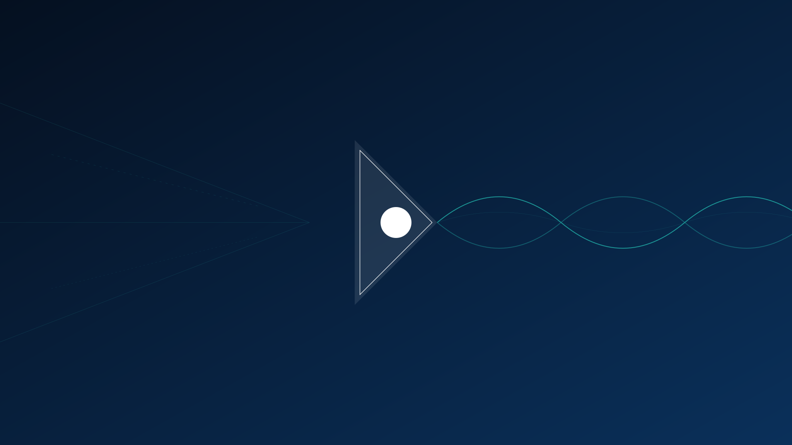

Foundational Research
The Physics of Information & The Engineering of Consciousness
The Research Mandate
Unifying the Physical and the Logical
We stand at the frontier of a new science. Our work is dedicated to healing the divide between the laws of physics and the laws of computation. By treating information as a physical quantity and consciousness as an engineerable state of matter, we are developing the substrate for the next epoch of technology.
Applied Physics & Sensor Systems
The Limit of Sampling | Asynchronous Distributed Sensing
Pioneering bio-inspired, event-driven sensor architectures that eliminate the Nyquist sampling bottleneck, enabling ultra-low power environmental monitoring with sub-millisecond temporal resolution.
The Physics of Causality | Causal Inference Metrology
Establishing a new framework for detection that correlates disparate physical substrates (biological and quantum vacuum) to identify anomalous events through causal necessity rather than signature matching.
The Anticipation of State | Predictive Neuromorphic Control
Developing Bayesian Neural Operators that couple quantum sensing with predictive engines, allowing systems to anticipate dynamic state changes in complex physical fields.
The Coherence of Light | Spatially-Encoded Optical Architectures
Architecting next-generation free-space optical systems that utilize spatial diversity and event-driven modulation to maintain coherence in highly turbulent atmospheric conditions.
The Speed of Response | High-Speed Adaptive Material Response
Researching cognitive control loops for smart materials that can characterize and mitigate high-energy incident flux with sub-millisecond latency.
The Integrity of Identity | Quantum State Verification
Leveraging the non-local correlations of entangled photon pairs to provide absolute, physically-guaranteed verification of remote system identity.
Cognitive Architectures & Interface
The Shielding of Thought | Bio-Adaptive Neural Protection
Engineering closed-loop control systems that monitor neurophysiological states and dynamically modulate external fields to maintain cognitive stability in electrically noisy environments.
The Origin of Decision | Causal Attribution in Hybrid Systems
Developing structural causal models (SCM) to mathematically formalize and verify decision-making pathways in complex human-machine symbiotic loops.
The Bandwidth of Understanding | Thermodynamic Human-Machine Interfaces
Architecting "co-processor" systems based on the thermodynamics of information, designed to optimize the entropy flow between human operators and high-dimensional data streams.
The Unity of Awareness | Planetary-Scale Coherence Protocols
Developing hierarchical network protocols for integrating distributed quantum and classical sensors into a unified, coherent global instrument.
The Automation of Curiosity | Autonomous Scientific Discovery Agents
Engineering cognitive architectures based on the Free Energy Principle (Active Inference) to create autonomous agents capable of formulating and testing scientific hypotheses.
Foundational Physics & Philosophy
The Cost of Information | Thermodynamics of Computation
Investigating the fundamental energy limits of information processing (Landauer's limit) and the necessity of monolithic, non-dual computing architectures.
The Laws of Certainty | The Physics of Trust
Deriving new architectures for information security based on physical laws (No-Cloning Theorem, Bell's Theorem) rather than computational complexity assumptions.
The Structure of Sentience | Physical Theories of Consciousness
Formalizing the relationship between integrated information, recursive processing, and the emergence of sentient self-models in physical substrates.
The Stability of the Quantum | Resilient Quantum Architectures
Investigating novel physical architectures designed to overcome environmental decoherence, aiming to bridge the gap between theoretical quantum potential and practical realization.